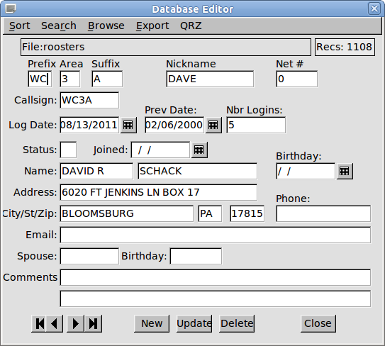
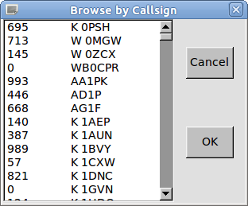

Net has a built-in editor for maintaining the its database. You open the editor by clicking on the menu button "Editor" or by pressing the function key F12 to edit the current active call in the call-in list. Of course this is one of those times that you may use the mouse. If you are starting a completly new net database, this is where to start. You probably already have most of the information that will be entered into the database. Once the net membership has been entered into the database the operation as net control operator will be very simple and quick.

These are normal data entry fields. You
move between them using the mouse, tabs, backspace, arrow keys etc.
The buttons at the bottom of the window are primarily for
moving between or acting upon an entry in the database. The
arrow keys from left to right allow you to move to the FIRST,
PREVIOUS, NEXT or LAST entry in the database. The ordering of
the database is controlled by the sort selection of CALLSIGN sort or
NET NBR sort. You may also go to a specific data entry using a
browse window. The browse window will either be by callsign or
by net nbr.

This view shows the callsign browse window.
Click on the desired callsign and press OK. Pressing
Cancel just returns to the Editor window with no changes. You
may also search for a callsign by Prefix, Area & Suffix; or by
just Suffix alone. The search window looks like:
You do not need to be concered about upper/lower
case letters.
If you own a copy of the QRZ database CDROM you may opt to fill in all of the available entries from that source. Be sure to enter the Prefix, Area, and Suffix entries and then press the QRZ menu button. The program will search for the QRZ database (first on the hard drive(s)) and then on available CD drives. Place the QRZ CD in the drive before selecting this option. For really speedy searches against the QRZ database I suggest copying the entire "callbk" directory from the CD to your c: drive if you are using Windows.
You may export the entire database to a text file by clicking on the Export menu item. A comma-separated-value file will be created which contains one line per database entry, for the entire database. The first line of this file is a field description line. The name of this file will be the same as the name of the database file but with the extension ".csv". Microsoft Excel, Microsoft Works, Star Office, Open Office and other spreadsheet programs can either open or import this type of file. All of the database can then be viewed or manipulated using the spreadsheet program. The program Net will not be written to emulate what these programs do so well. Therefore you will not find a print function or any other formatting tools within the net program.